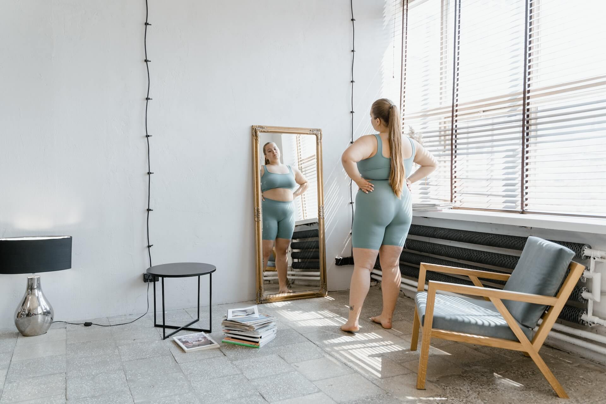

How to Start an Active and Fit Workout Routine When Overweight
Starting a new fitness and workout routine can be pretty scary, especially if you’re carrying a few extra pounds, but it’s a journey that is definitely worth taking. In this guide, we’ll explore the importance of regular exercise and share a few practical tips on how to kickstart an active and fit workout routine tailored just for you.
November 15, 2023

But before we do, let’s just get one thing straight: Your journey shouldn’t be about fitting into society’s beauty standards or having a skinny body. Exercise is all about embracing and celebrating the amazing body you have right now.
Why Exercise is Important
Regular exercise offers a wide variety of benefits, both for your physical health and mental well-being, too. From boosting your mood and improving the quality of your sleep to improving heart health and increasing your energy levels, exercise is a powerful tool that can transform your life entirely.
If you’re carrying a little extra weight, exercise is an important and necessary evil on your journey to a healthier lifestyle and a new you.
Exercise also helps you:
- Burn extra calories
- Build muscle
- Improve your overall well-being
- Release endorphins that act as a natural mood booster.
Say hello to a more positive outlook on life and goodbye to those wobbly bits when you follow our tips and get started on your workout routine.
How to Start an Active and Fit Workout Routine
Get ready to start your journey to a healthier you as we share a few tips to get you started:
Step #1: Get the Go-Ahead
It’s always a good idea to chat to your healthcare professional or a fitness expert before you start a new workout routine. They are best-placed to provide you with valuable insights into any potential health issues you may have and can help you tailor your workout routine to meet your specific needs and fitness goals.
Step #2: Slow and Steady Always Wins the Race
There is really no need to rush into a workout routine and push your poor body to its limits. Start off slow by doing activities that you enjoy and that are gentle on your joints. A few low-impact options you can try are walking, swimming, and cycling. Ease into these and only incorporate the more intense workouts when you are more confident in your abilities and feel comfortable with working out.
Step #3: Mix It Up
No one is going to be motivated to exercise when they are doing that same old thing time and again. Keep your workout and fitness journey interesting by trying out a number of activities. Try out a dance class, join a yoga class, or drag a buddy to the gym with you. Stay engaged and excited by adding a bit of spice into your workout routine.
Step #4: Set Realistic Goals
Working out without a goal in mind is pointless. Set yourself a few goals before you start your fitness journey. It could be a distance you want to run, a class you want to join, or toning up some of your more “hidden” bits. Celebrate each little milestone and keep going.
Step #5: Listen to Your Body
Your body is truly unique, so what works for someone else may not work for you. Listen to your body and pay attention to the little aches and pains that may just crop up while working out. If something doesn’t feel right, it is a definite signal to slow down and take a break.
Conclusion
Your workout journey is all about self-love and well-being. Starting an active and fit workout is a fantastic way to embrace the incredible person you are and the beautiful body you’re in. Remember to start off slow, be patient with yourself, and, most of all, enjoy the process. Here’s to a healthier, happier, and more active you. You’ve got this!